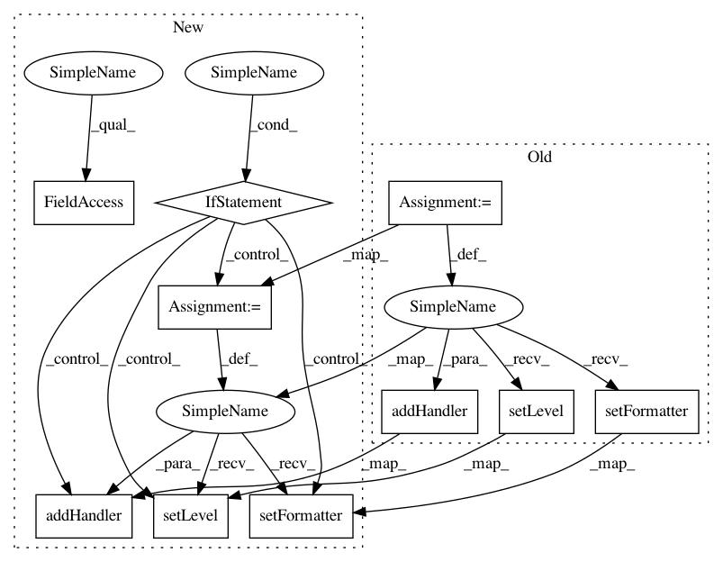

ef40597a8a5670ece57e80d46c9fe88c7bafa35a,mloop/utilities.py,,_config_logger,#Any#Any#Any#,48
Before Change
fh.setLevel(file_log_level)
fh.setFormatter(logging.Formatter("%(asctime)s %(name)-20s %(levelname)-8s %(message)s"))
log.addHandler(fh)
ch = logging.StreamHandler(stream = sys.stdout)
ch.setLevel(console_log_level)
ch.setFormatter(logging.Formatter("%(levelname)-8s %(message)s"))
log.addHandler(ch)
log.debug("MLOOP Logger configured.")
return kwargs
After Change
log = logging.getLogger("mloop")
if len(log.handlers) == 0:
log.setLevel(min(file_log_level,console_log_level))
if log_filename is not None:
fh = logging.FileHandler(log_foldername + log_filename + datetime_to_string(datetime.datetime.now()) + ".log")
fh.setLevel(file_log_level)
fh.setFormatter(logging.Formatter("%(asctime)s %(name)-20s %(levelname)-8s %(message)s"))
log.addHandler(fh)
ch = logging.StreamHandler(stream = sys.stdout)
ch.setLevel(console_log_level)
ch.setFormatter(logging.Formatter("%(levelname)-8s %(message)s"))
log.addHandler(ch)
log.debug("MLOOP Logger configured.")
return kwargs
def datetime_to_string(datetime):
"""
In pattern: SUPERPATTERN
Frequency: 3
Non-data size: 10
Instances
Project Name: michaelhush/M-LOOP
Commit Name: ef40597a8a5670ece57e80d46c9fe88c7bafa35a
Time: 2016-09-13
Author: MichaelRHush@gmail.com
File Name: mloop/utilities.py
Class Name:
Method Name: _config_logger
Project Name: automl/auto-sklearn
Commit Name: 4b272f9938dde90d5fecccfec0689fdffd61d336
Time: 2015-05-08
Author: feurerm@informatik.uni-freiburg.de
File Name: autosklearn/util/logging_.py
Class Name:
Method Name: get_logger
Project Name: epfl-lts2/pygsp
Commit Name: 8afad33c65b07c4186cce0430b3c749f87776aaf
Time: 2015-08-06
Author: basile.chatillon@epfl.ch
File Name: pygsp/utils.py
Class Name:
Method Name: build_logger